Underground gambling ring discovered beneath 600 building in cold war-era bomb shelter

CLICK4TRANSCRIPT
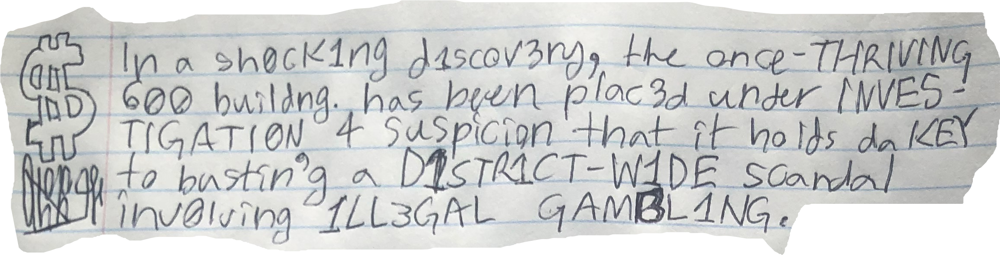
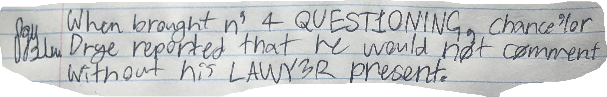
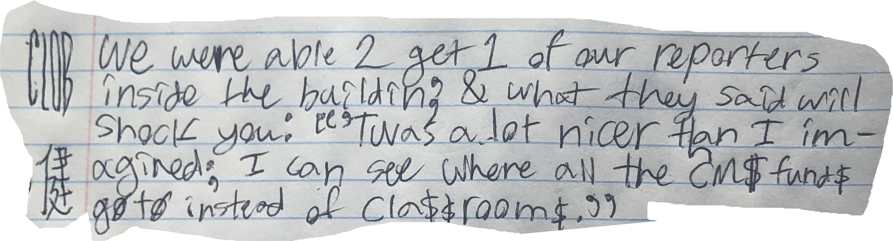
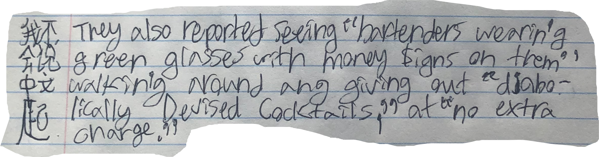
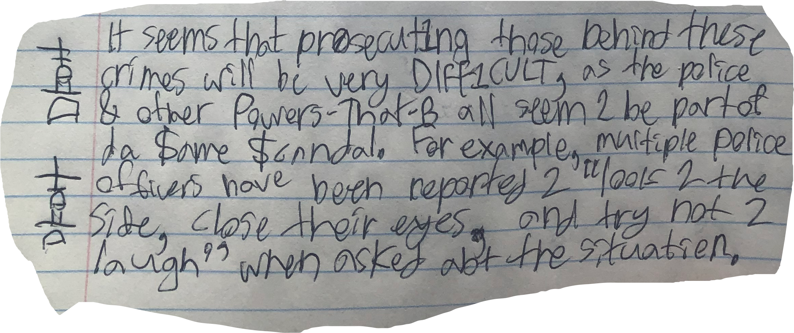







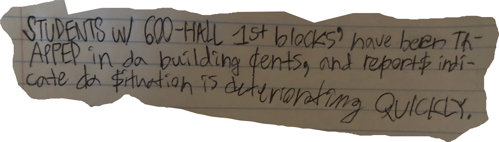
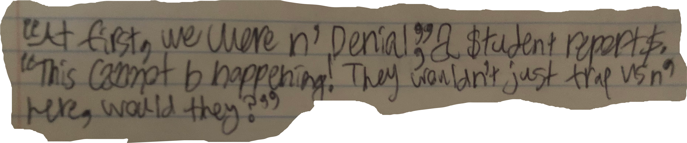
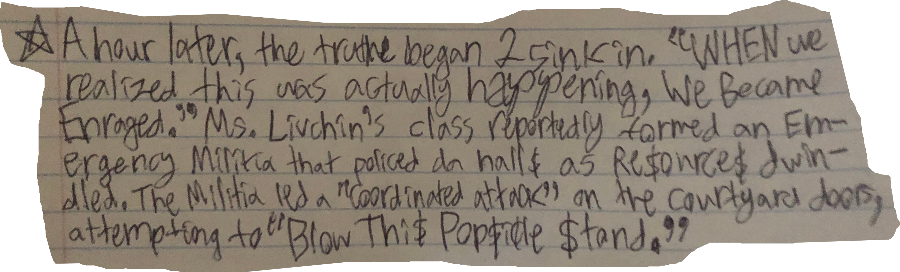

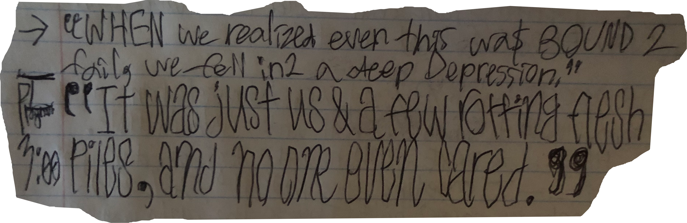


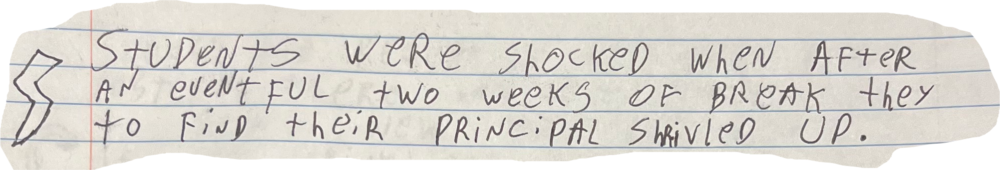
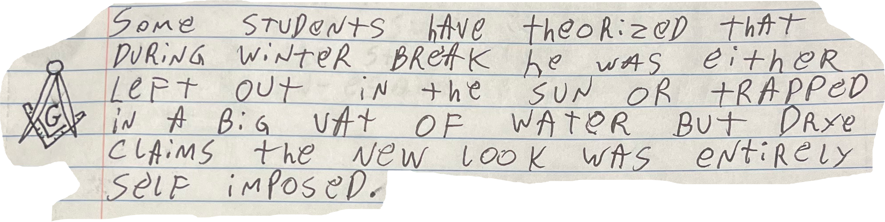
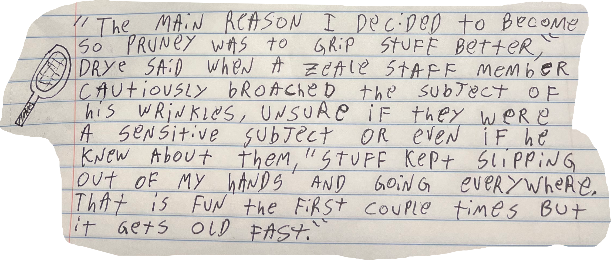
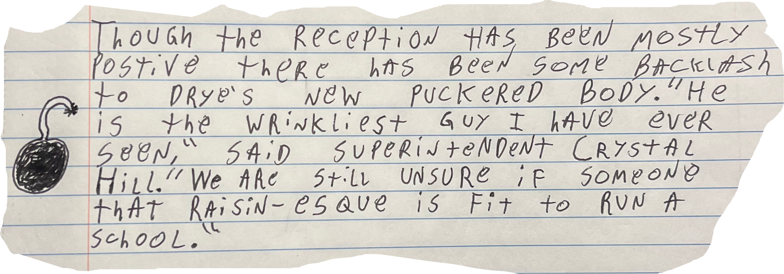

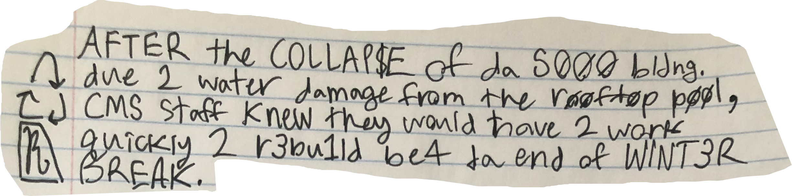
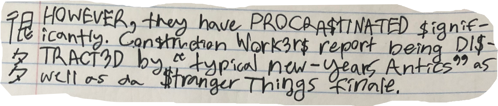
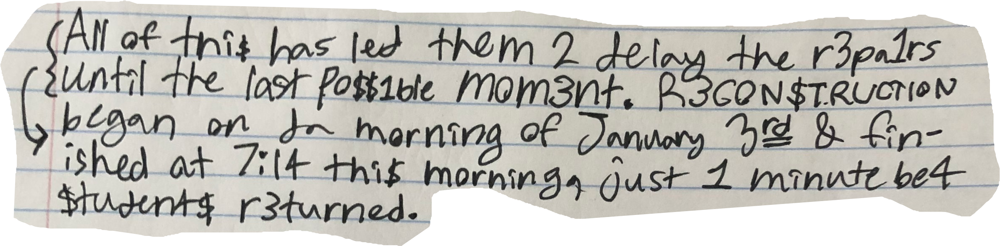
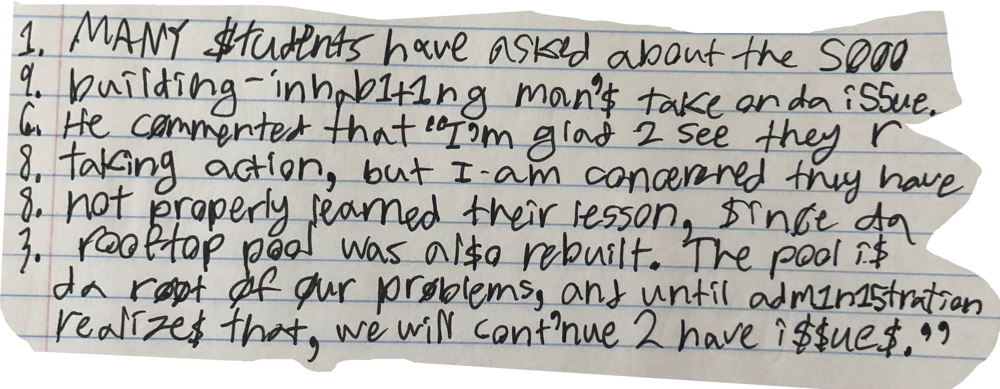

We’ve entered a critical period here at East. The left and right lunch lines no longer act as fun teams, but rather as violent battalions. The setbacks of lunch enjoyers for the last three years have been uncountable: Lunch disaster after lunch disaster.
And yet a line war is emerging as we speak. Somehow the line that you pick overshadows years of mutual camaraderie. The lunch system is designed to tear us apart for the sole purpose of selling more lunch, and yet we turn knife and fork at our fellow knights of the tray.
That’s why I urge all of you to stop poisoning cheese dippers and weaponising pizza slices, but instead to find shared humanity with members of the other line.
To get you started, here are some ice breakers to level the playing field:
— Concerned student, Zeagle Staff
*Editorials represent the opinion of Zeagle staff members and/or other contributors. They use a distinct visual identity (purple headline, no handwriting, vertical Instagram posts) to ensure they are not mixed up with news articles, upholding the Zeagle's commitment to journalistic integrity.

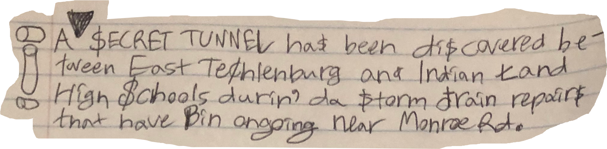
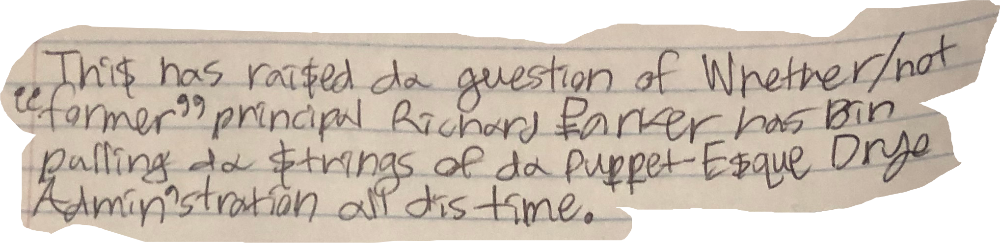
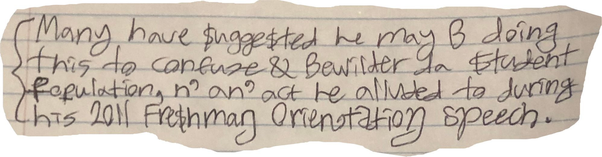
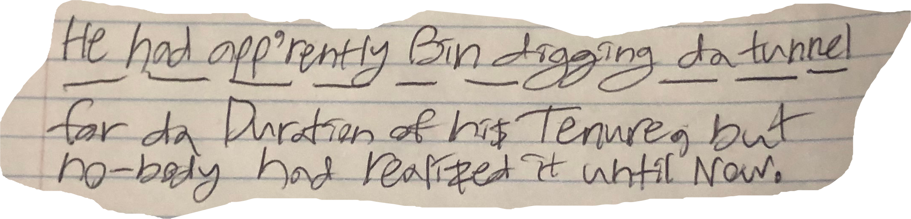
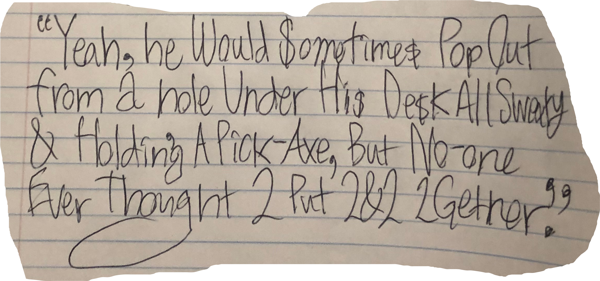

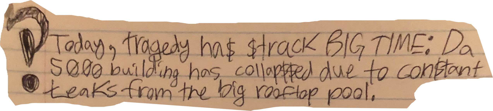
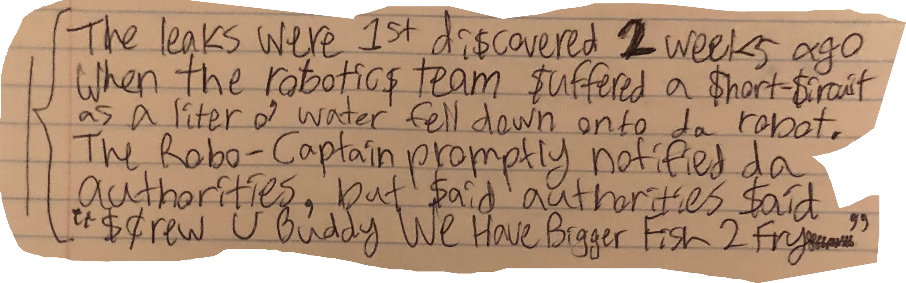
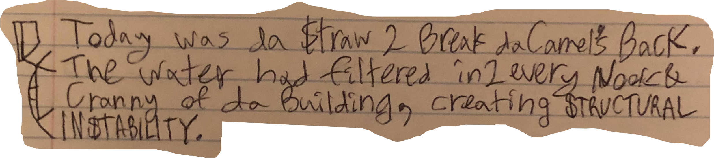
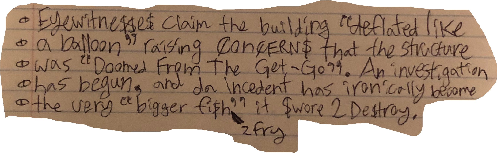
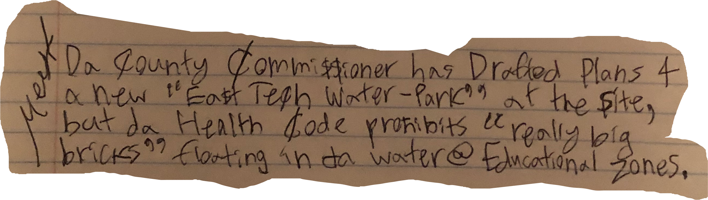
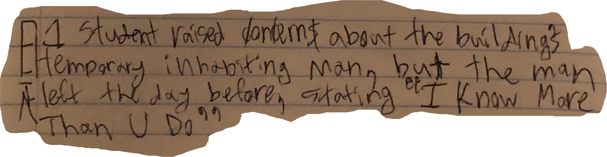

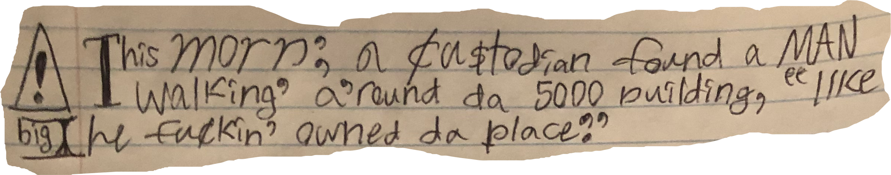
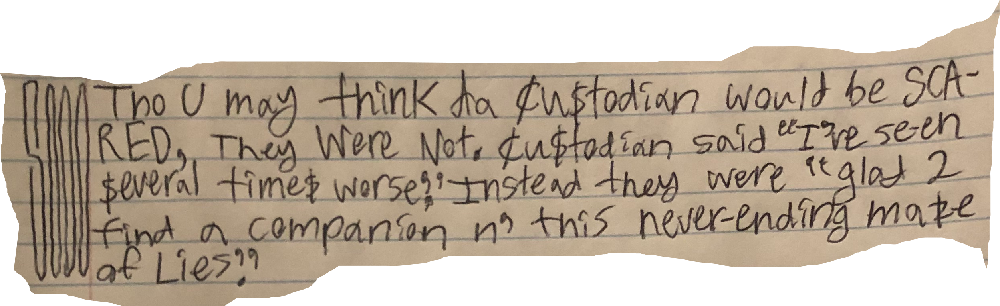
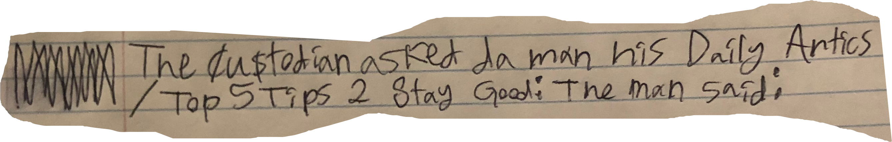
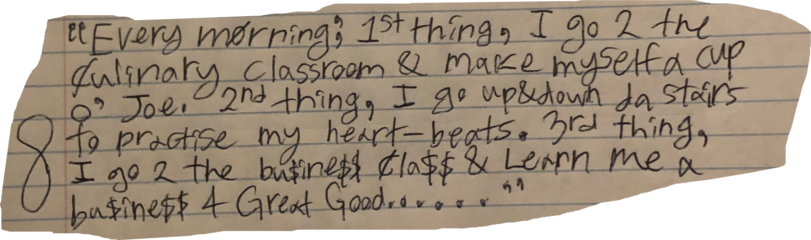